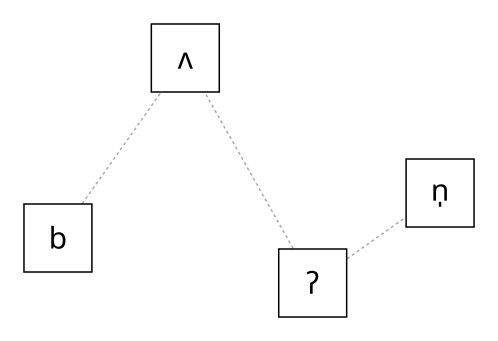
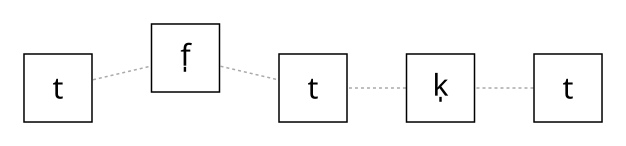
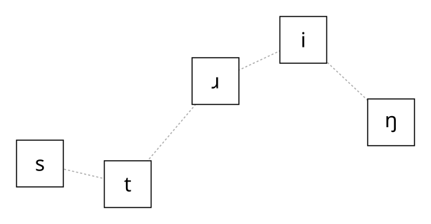
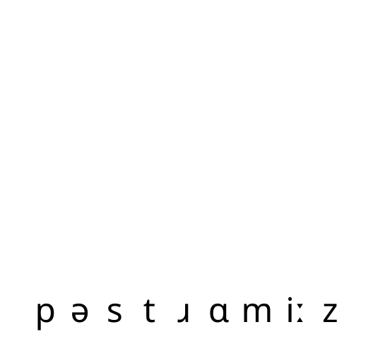
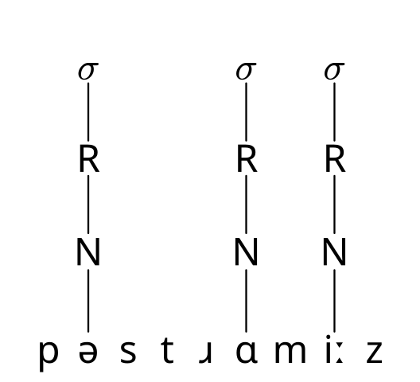
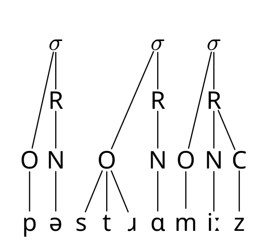

Prosodic Structure: Syllables
What is a syllable?
Why do we need syllables?
| light | dark | ||
|---|---|---|---|
| leaf | lif | feel | fiɫ |
| lock | lɑk | call | kɔɫ |
| lip | lɪp | pill | pɪɫ |
![#set text(font: "Noto Sans", size: 48pt)
#import "@preview/phonokit:0.7.0": *
#phonokit-init(font: "Noto Sans")
l #sym.arrow #ipa("\\darkl") / #blank() \#
#align(center)[#text(size: 0.5em)[-or-]]
#](../../../course-materials/lecture-notes/23_syllables/./assets/typst-render/index/typst-block-1.svg)
Why do we need syllables?
| light | dark | ||
|---|---|---|---|
| alive | əlaɪv | fault | fɔɫt |
| collude | kəlud | falter | fɔɫtɹ̩ |
| belie | bɨlaɪ | falcon | fæɫkn̩ |
?
Why do we need syllables?
| light | dark | ||
|---|---|---|---|
| leaf | .lif. | feel | .fiɫ. |
| lock | .lɑk. | call | .kɔɫ. |
| lip | .lɪp. | pill | .pɪɫ. |
| alive | .ə.laɪv. | fault | .fɔɫt. |
| collude | .kə.lud. | falter | .fɔɫ.tɹ̩. |
| belie | .bɨ.laɪ. | falcon | .fæɫ.kn̩. |
Laterals are dark when they’re in a syllable coda.
Why do we need syllables?
German Devoicing
| praise | lop | to praise | loben |
| sorry | leit | to suffer | leiden |
| coffin | sark | coffins | sεrge |
| rain | reknen | to rain | regen |
| hunting | jakden | to hunt | jagen |
Why do we need syllables?
German Devoicing
| praise | .lop. | to praise | .lo.ben. |
| sorry | .leit. | to suffer | .lei.den. |
| coffin | .sark. | coffins | .sεr.ge. |
| rain | .rek.nen. | to rain | .re.gen. |
| hunting | .jak.den. | to hunt | .ja.gen. |
Obstruents devoice when they’re in the syllable coda.
What is a syllable?
A unit of timing/rhythm.
A phonological unit.
Any method we come up for formally defining syllables should align with our phonological intuitions, and phonological patterns.
Sonority
Generally, syllables are defined by a rise then fall of sonority
- Sonority
-
The relative openness of the vocal tract
Sonority Scale
Vowels
- Low vowels
- Mid Vowels
- High vowels & Glides
Sonorants
- Rhotics
- Liquids
- Nasals
Obstruents
- Fricatives
- Stops
Sonority


Sonority
Languages can vary in terms of how sonorous the peak of a syllable can be.
English
Tashelhiyt

Sonority
Sometimes, sonority sequencing doesn’t work
string

sixths

Building Syllables
Every vowel or syllabic sonorant forms a “nucleus”.
We build the largest possible onset (usually respecting sonority sequencing) right to left.
Everything else gets jammed into the coda.
Building Syllables




Syllable “Weight”
Some languages seem to have “minimal word” requirements
English:
| peɪ | pɛt | *pɛ |
| tiː | tɪp | *tɪ |
| suː | sʊt | *sʊ |
Syllable Weight
Some languages shorten vowels in syllables with codas
Yowlumne:
| /xat/ | [xa.tal] | [xat.hin] |
| /xil/ | [xi.lal] | [xil.hin] |
| /la:n/ | [la:.nal] | [lan.hin] |
| /me:k/ | [me:.kal] | [mek.hin] |
Syllable Weight
There seems to be some equivalence between [V:] and [VC].
We use units of “weight” or “moras” to describe these relationships.
Syllable Weight
Short vowels get 1 mora
Long vowels get 2 moras
Depending on the language, coda cononants get a mora
Feet and Words